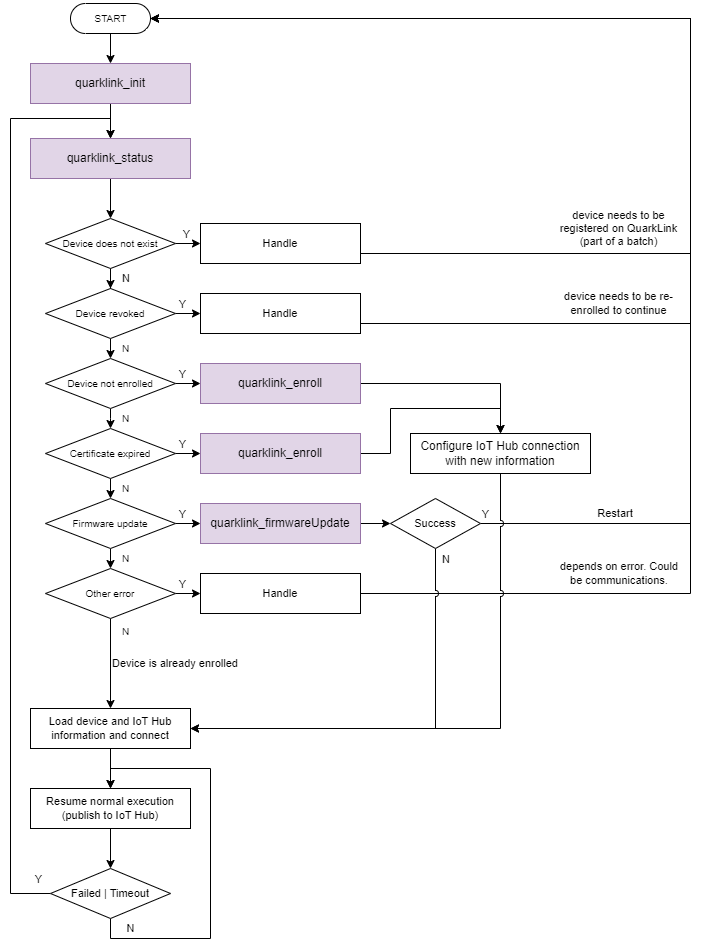

|
QuarkLink-Client
v1.3.2
Crypto Quantique's QuarkLink-Client library
|
|
QuarkLink-Client
v1.3.2
Crypto Quantique's QuarkLink-Client library
|
QuarkLink Client is a C library that implements the core functionalities of QuarkLink, to provide the user with an easy way to enroll to quickly and safely obtain the information needed to connect to their prefered IoT Hub.
This way the user can spend more time designing their application without focusing too much on connecting to the backend services.
QuarkLink Client provides end-users with a library that is ready-to-use on specific platforms, so that all is needed is a few API calls.
The flow of a QuarkLink based application is represented in the flowchart below:

The library is ready to be used and comes as a pre-compiled binary for a variety of platforms, that the developer can use within their project.
Currently supported platforms can be found in the quarklink-client-binaries repository.
In order to implement a QuarkLink application the user needs a QuarkLink instance, whose details are needed to initialise the QuarkLink context. A QuarkLink instance comes in the form of a url such as cryptoquantique.quarklink.io and more information on how to obtain one can be found on our website.
By selecting the appropriate binary, the environment (i.e. what platform and what crypto module to use) is pre-configured.
The user only needs to include quarklink.h to be able to use all the QuarkLink APIs.
The QuarkLink application should follow a similar structure as the one represented in the flowchart above.
To use the quarklink-client library, the user first needs to define a quarklink_context_t variable, that is used to hold all the resources needed for the application.
The structure needs to be initialised by a call to quarklink_init(), after which it will be possible to use all the other APIs, as indicated in the documentation.
Flashing the program is specific to the board used and the user is trusted to know how to perform this step.
Example code is available at our QuarkLink getting started page.